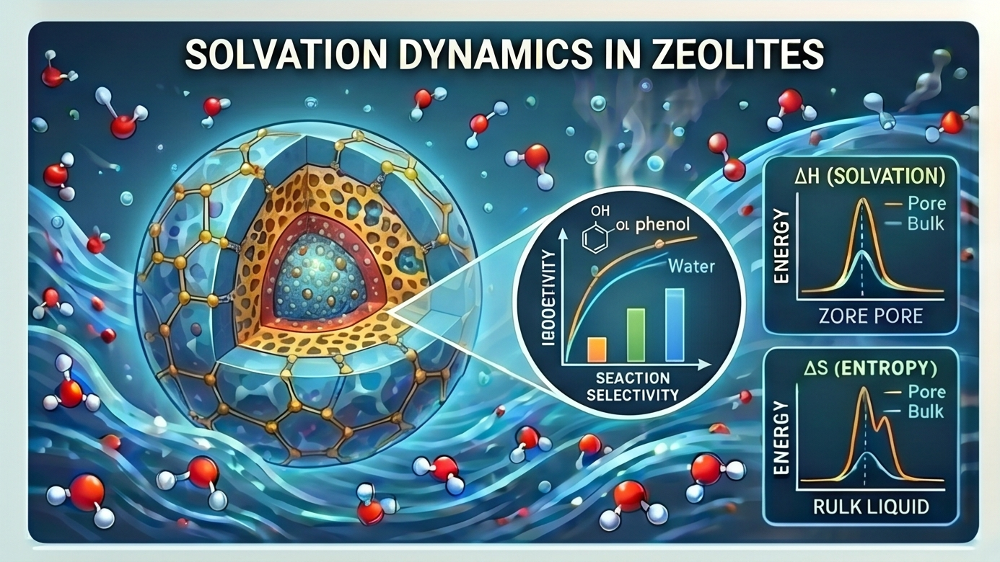

Current Project

Many liquid-phase reactions in chemical manufacturing are carried out inside zeolites — crystalline, microporous aluminosilicates whose nanometer-scale pores confine both reactants and solvent. Inside these pores, solvent molecules behave very differently from how they do in bulk liquid, and this confined solvation environment can strongly influence reaction rates and selectivity. This project develops a quantitative understanding of solvation thermodynamics in two industrially important zeolite frameworks, BEA and FAU, and how the local solvent environment shapes the energetics of adsorbed species.
Capturing solvation effects is essential for predictive catalyst design, yet it is challenging because the relevant physics spans multiple length and time scales. BEA and FAU differ in pore geometry and connectivity, which changes how solvent organizes around an adsorbate:
No single method captures both the accuracy of bond-level interactions and the statistics of many solvent molecules. The work therefore combines methods across scales: